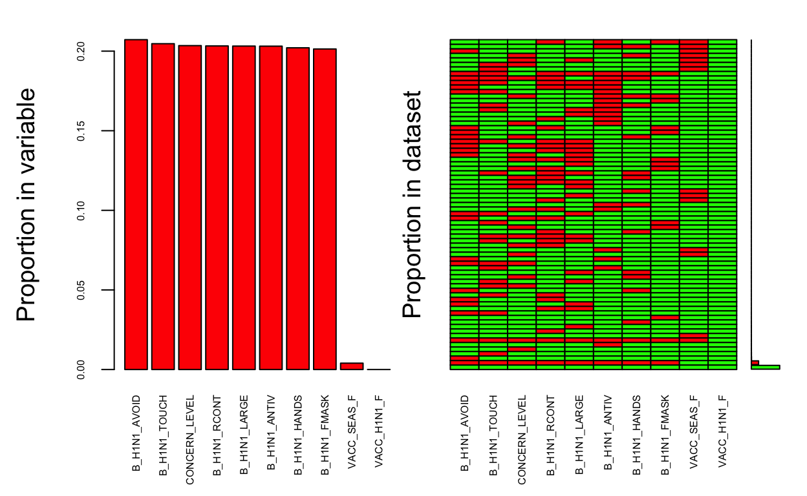
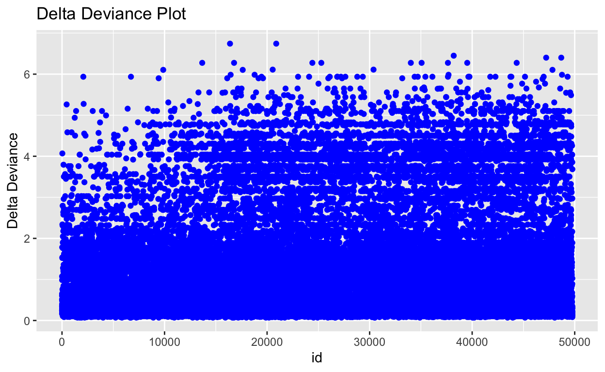
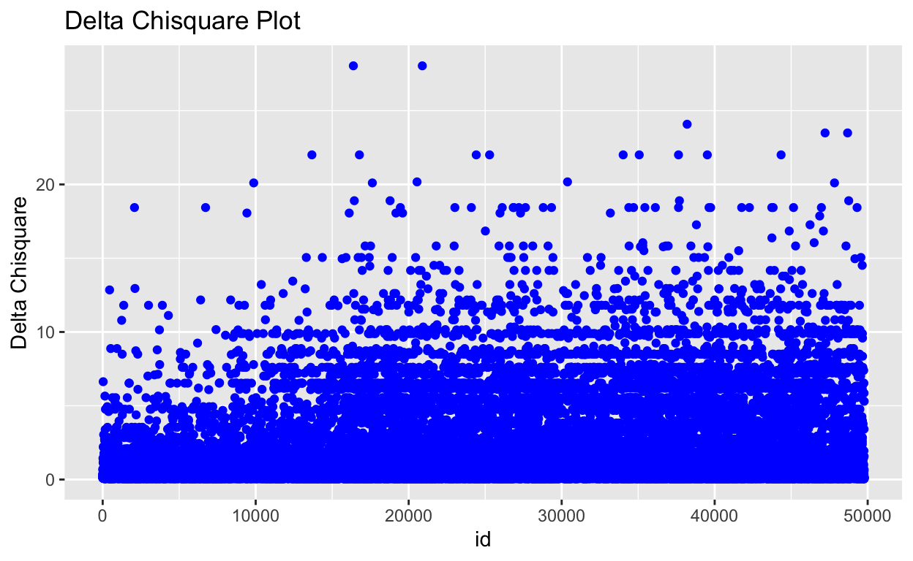
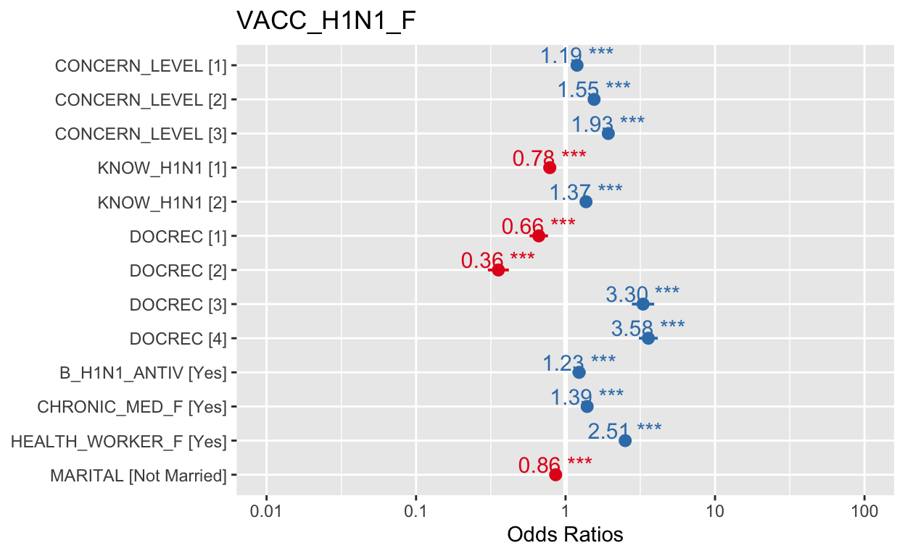

1. Overview
1.1 Core Purpose of Dataviz Exercise
- This makeover aims to visualise the insight of National 2009 H1N1 Flu Survey (NHFS) after the analysis with the explanatory model method. This extensive dataset would not just allow us to perform descriptive analytics on how H1N1 vaccination rates vary in USA, but also allows me to derive medical insights about how a person’s individual attributes relate to the willingness of taken H1N1 vaccination. I try to express this response as a function of predictor variables, which are directly or indirectly related to the effect of taken vaccine. More importantly, I want to visualize the results by using the knowledge obtained from Visual Analytics and Application class.
- And at the same time, increasing the interaction with users through shiny applications. With the help of posters and shiny applications, I want to let users know the insight contain and hide in NHFS dataset.The purpose of an explanatory model is to explain rather than predict the outcome of taken vaccination, where the objective of explanation is the application of statistical inference in order to: 1.identify predictor variables with statistically significant impact to the decision of taking H1N1 Flu Vaccination 2.estimate the magnitude of impact of the significant predictors
1.2 Literature review
Before doing this project, Prof. Kam recommended many very useful packages, so I will use a large number of blorr packages in the following paragraphs.Blorr Tools designed to make it easier for users, particularly beginner/intermediate R users to build logistic regression models. Includes comprehensive regression output, variable selection procedures, model validation techniques and a ‘shiny’ app for interactive model building. At the same time, I find the package ‘jtools’ and ‘huxtable’ by using the function ‘summs’, which have the similar function with blorr’s ‘blr_regress’ , so I focus on using blorr. And in the end, I using the ‘sjPlot’ package to plot the insight graph on model’s odd ratio. ‘sjPlot’ is the collection of plotting and table output functions for data visualization
At the same time, a key consideration in the literature review is how to perform a good explanatory model. I review several article about building the explanatory model. Among those, I review a lot from the Dimitrios Tziotis[—] article. I also read many other articles and the second consultation with Prof Kam, and finally decided to interpret the result after I done the explanatory model.
2.0 Interactivity
- As for the interactivity of explaining model, I want to enable users to directly browse all statistics insight and odd ratio insight through shiny application. Interaction can be created by allowing the user to select the information they want in shiny app to click in the slider bar, such as the model’s odd ratio, which will appear on the right side of the diagram and text explanation, that is, all the functions in the blorr package, I can reach the maximum interactivity by presenting shiny applications to users.
3.0 Step-by-step Data Visualisation Preparation
3.1 Installing and launching R packages
A list of packages are required for this makeover exercise. This code chunk installs the required packages and loads them onto RStudio environment.
packages = c('tidyverse','readr','ISLR','VIM', 'gridExtra','blorr','jtools','huxtable','boot','sjPlot')
for (p in packages){
if(!require(p, character.only = T)){
install.packages(p)
}
library(p,character.only= T )
}
3.2 Data Preparation
3.2.1 Share Code in the group project
H1N1 <- read_csv('data/H1N1_Final_dan_edit.csv')
H1N1[H1N1 == '#N/A'] <- NA
VACC_H1N1_F VACC_SEAS_F B_H1N1_ANTIV
0.000000000 0.003997732 0.203132974
B_H1N1_AVOID B_H1N1_FMASK B_H1N1_HANDS
0.207201588 0.201360930 0.202098100
B_H1N1_LARGE B_H1N1_RCONT B_H1N1_TOUCH
0.203189680 0.203274738 0.204678197
CONCERN_LEVEL HQ23 HQ24
0.203473207 0.854834137 0.963198185
HQ24_B INT_H1N1 INT_NEXT
0.994740573 0.255146016 0.692755883
INT_SEAS KNOW_H1N1 Q23
0.459625744 0.204479728 0.960518855
Q24 Q24_B DOCREC
0.977417068 0.996597675 0.044031755
ILI_DIAG_H1N1_F ILI_DIAG_SEAS_F ILI_F
0.961993195 0.961993195 0.020484831
ILI_OTHER_F ILI_TREAT_F PSL_1
0.016869861 0.922497874 1.000000000
PSL_2 Q9 Q9_NUM
1.000000000 1.000000000 1.000000000
CHRONIC_MED_F CLOSE_UNDER6MO_F HEALTH_WORKER_F
0.031216331 0.225333144 0.224766090
PATIENT_CONTACT_F AGEGRP EDUCATION_COMP
0.264346470 0.000000000 0.242968528
HH_CHILD_R HISP_I INC_CAT1
0.007074001 0.000000000 0.213198185
INSURE MARITAL N_ADULT_R
1.000000000 0.243592288 0.007074001
N_PEOPLE_R Q95 Q95_INDSTR
0.003118798 0.994527927 0.594074284
Q95_OCCPN RACEETH4_I RENT_OWN_R
0.594074284 0.000000000 0.983612135
SEX_I STATE REAS_NOH1N1_AHAD_F
0.000000000 0.000000000 0.401020697
REAS_NOH1N1_ALLG_F REAS_NOH1N1_CANT_F REAS_NOH1N1_COST_F
0.401020697 0.401020697 0.401020697
REAS_NOH1N1_DKNW_F REAS_NOH1N1_DWRK_F REAS_NOH1N1_GOTO_F
0.401020697 0.401020697 0.401020697
REAS_NOH1N1_NDOC_F REAS_NOH1N1_NEVR_F REAS_NOH1N1_NNDD_F
0.401020697 0.401020697 0.401020697
REAS_NOH1N1_NOTA_F REAS_NOH1N1_OTHR_F REAS_NOH1N1_REFD_F
0.401020697 0.401020697 0.401020697
REAS_NOH1N1_SAVE_F REAS_NOH1N1_SEFF_F REAS_NOH1N1_TIME_F
0.401020697 0.401020697 0.401020697 h1n1data <-H1N1 %>%
select(VACC_H1N1_F,
VACC_SEAS_F,
B_H1N1_ANTIV,
B_H1N1_AVOID,
B_H1N1_FMASK,
B_H1N1_HANDS,
B_H1N1_LARGE,
B_H1N1_RCONT,
B_H1N1_TOUCH,
CONCERN_LEVEL,
INT_H1N1,
KNOW_H1N1,
INT_SEAS,
DOCREC,
CHRONIC_MED_F,
CLOSE_UNDER6MO_F,
HEALTH_WORKER_F,
PATIENT_CONTACT_F,
AGEGRP,
EDUCATION_COMP,
HH_CHILD_R,
INC_CAT1,
MARITAL,
RACEETH4_I,
N_ADULT_R,
SEX_I,
STATE)
h1n1data <- transform(h1n1data,
VACC_H1N1_F= as.factor(VACC_H1N1_F),
VACC_SEAS_F= as.factor(VACC_SEAS_F),
B_H1N1_ANTIV= as.factor(B_H1N1_ANTIV),
B_H1N1_AVOID= as.factor(B_H1N1_AVOID),
B_H1N1_FMASK= as.factor(B_H1N1_FMASK),
B_H1N1_HANDS= as.factor(B_H1N1_HANDS),
B_H1N1_LARGE= as.factor(B_H1N1_LARGE),
B_H1N1_RCONT= as.factor(B_H1N1_RCONT),
B_H1N1_TOUCH= as.factor(B_H1N1_TOUCH),
CONCERN_LEVEL= as.factor(CONCERN_LEVEL),
INT_H1N1= as.factor(INT_H1N1),
KNOW_H1N1= as.factor(KNOW_H1N1),
DOCREC= as.factor(DOCREC),
CHRONIC_MED_F= as.factor(CHRONIC_MED_F),
CLOSE_UNDER6MO_F= as.factor(CLOSE_UNDER6MO_F),
HEALTH_WORKER_F= as.factor(HEALTH_WORKER_F),
AGEGRP= as.factor(AGEGRP),
EDUCATION_COMP= as.factor(EDUCATION_COMP),
HH_CHILD_R= as.factor(HH_CHILD_R),
INC_CAT1= as.factor(INC_CAT1),
MARITAL= as.factor(MARITAL),
RACEETH4_I= as.factor(RACEETH4_I),
N_ADULT_R= as.factor(N_ADULT_R),
SEX_I= as.factor(SEX_I),
STATE= as.factor(STATE),
PATIENT_CONTACT_F = as.factor(PATIENT_CONTACT_F),
INT_SEAS = as.factor(INT_SEAS)
)
region <- read_csv("data/state_region.csv")
h1n1data$state_recoded <- str_to_title(h1n1data$STATE)
h1n1data <- left_join(h1n1data, region,
by=c("state_recoded" = "State"))
glimpse(h1n1data)
Rows: 70,540
Columns: 29
$ VACC_H1N1_F <fct> No, No, No, No, No, Yes, No, No, No, No, …
$ VACC_SEAS_F <fct> No, Yes, Yes, Yes, No, Yes, Yes, No, Yes,…
$ B_H1N1_ANTIV <fct> No, No, NA, No, No, No, No, No, NA, No, N…
$ B_H1N1_AVOID <fct> Yes, Yes, NA, Yes, Yes, No, Yes, Yes, NA,…
$ B_H1N1_FMASK <fct> No, No, NA, Yes, No, No, No, No, NA, No, …
$ B_H1N1_HANDS <fct> Yes, Yes, NA, Yes, Yes, Yes, Yes, Yes, NA…
$ B_H1N1_LARGE <fct> Yes, Yes, NA, Yes, Yes, No, No, Yes, NA, …
$ B_H1N1_RCONT <fct> Yes, No, NA, Yes, Yes, No, No, No, NA, No…
$ B_H1N1_TOUCH <fct> Yes, Yes, NA, Yes, Yes, Yes, No, No, NA, …
$ CONCERN_LEVEL <fct> 2, 2, NA, 2, 1, 2, 1, 3, NA, 2, 2, NA, 0,…
$ INT_H1N1 <fct> 1, 2, 2, 2, 2, NA, 0, 2, 3, 1, 2, NA, 0, …
$ KNOW_H1N1 <fct> 0, 2, NA, 2, 2, 2, 2, 0, NA, 0, 0, NA, 0,…
$ INT_SEAS <fct> 1, NA, NA, NA, 2, NA, NA, 2, NA, NA, NA, …
$ DOCREC <fct> 1, NA, 2, 1, NA, 4, 2, 1, 1, 4, 1, 4, 1, …
$ CHRONIC_MED_F <fct> No, Yes, Yes, Yes, No, No, No, No, No, No…
$ CLOSE_UNDER6MO_F <fct> No, No, NA, No, No, No, No, No, NA, Yes, …
$ HEALTH_WORKER_F <fct> No, No, NA, No, Yes, Yes, No, No, NA, No,…
$ PATIENT_CONTACT_F <fct> No, NA, NA, No, No, Yes, No, No, NA, No, …
$ AGEGRP <fct> 65+ Years, 35 - 44 Years, 10 - 17 Years, …
$ EDUCATION_COMP <fct> Some College, Some College, NA, 12 Years,…
$ HH_CHILD_R <fct> 0, 3, 3, 0, 0, 0, 0, 2, 2, 0, 3, 3, 0, 2,…
$ INC_CAT1 <fct> "<= $10,000", "$15,001 - $25,000", "$15,0…
$ MARITAL <fct> Not Married, Not Married, NA, Married, No…
$ RACEETH4_I <fct> "Non-Hispanic, White Only", "Non-Hispanic…
$ N_ADULT_R <fct> 1, 1, 1, 2, 2, 4, 2, 2, 2, 1, 2, 2, 2, 2,…
$ SEX_I <fct> Female, Female, Female, Female, Female, M…
$ STATE <fct> NEW MEXICO, OHIO, OHIO, IDAHO, OREGON, NE…
$ state_recoded <chr> "New Mexico", "Ohio", "Ohio", "Idaho", "O…
$ Region <chr> "West Region", "Midwest Region", "Midwest…3.2.2 Building Explainatory Model
In order to explain causal effects, we must rely on domain knowledge to isolate the variables that we consider impactful. Variables such as ‘State’ seem relevant but are simply too sparse to be of any use. Below code I remove it.
dat1 <- h1n1data[,-27]
Recode the target variable citizen who did take vaccine as value 1 and did not take vaccine as value 0.
Plot missing values:
aggr(dat1[,1:10], col = c('green','red'), numbers = TRUE, sortVars = TRUE,
labels = names(dat1), cex.axis = .5, gap = 2,
ylab = c("Proportion in variable","Proportion in dataset"))

Variables sorted by number of missings:
Variable Count
B_H1N1_AVOID 0.207201588
B_H1N1_TOUCH 0.204678197
CONCERN_LEVEL 0.203473207
B_H1N1_RCONT 0.203274738
B_H1N1_LARGE 0.203189680
B_H1N1_ANTIV 0.203132974
B_H1N1_HANDS 0.202098100
B_H1N1_FMASK 0.201360930
VACC_SEAS_F 0.003997732
VACC_H1N1_F 0.000000000Base model
The following is a list of all the possible explanations variable for vaccinations and we did a logistic regression.
model0 <- glm(VACC_H1N1_F ~ B_H1N1_ANTIV + B_H1N1_AVOID + B_H1N1_FMASK+ B_H1N1_HANDS+ B_H1N1_LARGE+ B_H1N1_RCONT+ B_H1N1_TOUCH+ CONCERN_LEVEL + KNOW_H1N1 + DOCREC + CHRONIC_MED_F + HEALTH_WORKER_F + MARITAL+ SEX_I + HH_CHILD_R+ N_ADULT_R, data= dat1, family = binomial(link = 'logit'))
blr_regress(model0)
Model Overview
----------------------------------------------------------------------------
Data Set Resp Var Obs. Df. Model Df. Residual Convergence
----------------------------------------------------------------------------
data VACC_H1N1_F 48950 48949 48925 TRUE
----------------------------------------------------------------------------
Response Summary
--------------------------------------------------------
Outcome Frequency Outcome Frequency
--------------------------------------------------------
0 37926 1 11024
--------------------------------------------------------
Maximum Likelihood Estimates
-------------------------------------------------------------------------
Parameter DF Estimate Std. Error z value Pr(>|z|)
-------------------------------------------------------------------------
(Intercept) 1 -2.0238 0.0958 -21.1286 0.0000
B_H1N1_ANTIVYes 1 0.2249 0.0531 4.2353 0.0000
B_H1N1_AVOIDYes 1 -0.0066 0.0309 -0.2126 0.8317
B_H1N1_FMASKYes 1 0.2376 0.0454 5.2330 0.0000
B_H1N1_HANDSYes 1 0.1874 0.0389 4.8127 0.0000
B_H1N1_LARGEYes 1 -0.0767 0.0317 -2.4198 0.0155
B_H1N1_RCONTYes 1 -0.1177 0.0323 -3.6497 3e-04
B_H1N1_TOUCHYes 1 0.0837 0.0301 2.7769 0.0055
CONCERN_LEVEL1 1 0.1653 0.0466 3.5515 4e-04
CONCERN_LEVEL2 1 0.4280 0.0457 9.3574 0.0000
CONCERN_LEVEL3 1 0.6492 0.0510 12.7190 0.0000
KNOW_H1N11 1 -0.2401 0.0516 -4.6550 0.0000
KNOW_H1N12 1 0.3009 0.0255 11.7908 0.0000
DOCREC1 1 -0.3930 0.0751 -5.2338 0.0000
DOCREC2 1 -1.0211 0.0847 -12.0508 0.0000
DOCREC3 1 1.2236 0.0902 13.5617 0.0000
DOCREC4 1 1.2981 0.0767 16.9266 0.0000
CHRONIC_MED_FYes 1 0.3219 0.0266 12.1048 0.0000
HEALTH_WORKER_FYes 1 0.9243 0.0341 27.0934 0.0000
MARITALNot Married 1 -0.1835 0.0322 -5.6921 0.0000
SEX_IMale 1 0.1459 0.0255 5.7112 0.0000
HH_CHILD_R 1 -0.1410 0.0278 -5.0794 0.0000
N_ADULT_R2 1 -0.0429 0.0367 -1.1695 0.2422
N_ADULT_R3 1 -0.1603 0.0473 -3.3912 7e-04
N_ADULT_R4 1 -0.1914 0.0662 -2.8905 0.0038
-------------------------------------------------------------------------
Association of Predicted Probabilities and Observed Responses
---------------------------------------------------------------
% Concordant 0.7664 Somers' D 0.5332
% Discordant 0.2333 Gamma 0.5331
% Tied 3e-04 Tau-a 0.1860
Pairs 418096224 c 0.7665
---------------------------------------------------------------blr_model_fit_stats(model0)
Model Fit Statistics
-----------------------------------------------------------------------------------
Log-Lik Intercept Only: -39033.108 Log-Lik Full Model: -21883.399
Deviance(48925): 43766.798 LR(24): 34299.418
Prob > LR: 0.000
MCFadden's R2 0.439 McFadden's Adj R2: 0.439
ML (Cox-Snell) R2: 0.385 Cragg-Uhler(Nagelkerke) R2: 0.575
McKelvey & Zavoina's R2: 0.231 Efron's R2: 0.186
Count R2: 0.798 Adj Count R2: 0.103
BIC: 44036.762 AIC: 43816.798
-----------------------------------------------------------------------------------It can be seen that the current AIC is 43816.19. Next, we will try to select variable to fit the model by Stepwise.
collinearity diagnostics
VIF that exceed 10 are often regarded as indicating multicollinearity, but in weaker models values above 2.5 may be a cause for concern. In our model, it seem all the explanatory varialbe is fine
blr_coll_diag(model0)
** We also see reports on goodness-of-fit statistics and criteria such as AIC, BIC, Deviance, which can be used for model selection under certain conditions. **
But the first thing we did was to use Stepwise in the Blorr package to select the predictor most fit the model.Build regression model from a set of candidate predictor variables by removing predictors based on akaike information criterion, in a stepwise manner until there is no variable left to remove any more.
blr_step_aic_backward(model0, details = TRUE)
Backward Elimination Method
---------------------------
Candidate Terms:
1 . B_H1N1_ANTIV
2 . B_H1N1_AVOID
3 . B_H1N1_FMASK
4 . B_H1N1_HANDS
5 . B_H1N1_LARGE
6 . B_H1N1_RCONT
7 . B_H1N1_TOUCH
8 . CONCERN_LEVEL
9 . KNOW_H1N1
10 . DOCREC
11 . CHRONIC_MED_F
12 . HEALTH_WORKER_F
13 . MARITAL
14 . SEX_I
15 . HH_CHILD_R
16 . N_ADULT_R
Step 0: AIC = 43816.8
VACC_H1N1_F ~ B_H1N1_ANTIV + B_H1N1_AVOID + B_H1N1_FMASK + B_H1N1_HANDS + B_H1N1_LARGE + B_H1N1_RCONT + B_H1N1_TOUCH + CONCERN_LEVEL + KNOW_H1N1 + DOCREC + CHRONIC_MED_F + HEALTH_WORKER_F + MARITAL + SEX_I + HH_CHILD_R + N_ADULT_R
------------------------------------------------------------
Variable DF AIC BIC Deviance
------------------------------------------------------------
B_H1N1_AVOID 1 43814.843 44026.008 43766.843
B_H1N1_LARGE 1 43820.665 44031.830 43772.665
B_H1N1_TOUCH 1 43822.536 44033.701 43774.536
B_H1N1_RCONT 1 43828.154 44039.320 43780.154
N_ADULT_R 1 43828.996 44022.564 43784.996
B_H1N1_ANTIV 1 43832.422 44043.587 43784.422
B_H1N1_HANDS 1 43838.299 44049.464 43790.299
HH_CHILD_R 1 43840.786 44051.952 43792.786
B_H1N1_FMASK 1 43841.779 44052.945 43793.779
SEX_I 1 43847.365 44058.531 43799.365
MARITAL 1 43847.476 44058.641 43799.476
CHRONIC_MED_F 1 43959.296 44170.462 43911.296
KNOW_H1N1 1 44003.376 44205.743 43957.376
CONCERN_LEVEL 1 44050.436 44244.004 44006.436
HEALTH_WORKER_F 1 44524.798 44735.963 44476.798
DOCREC 1 48946.258 49131.028 48904.258
------------------------------------------------------------
x B_H1N1_AVOID
Step 1 : AIC = 43814.84
VACC_H1N1_F ~ B_H1N1_ANTIV + B_H1N1_FMASK + B_H1N1_HANDS + B_H1N1_LARGE + B_H1N1_RCONT + B_H1N1_TOUCH + CONCERN_LEVEL + KNOW_H1N1 + DOCREC + CHRONIC_MED_F + HEALTH_WORKER_F + MARITAL + SEX_I + HH_CHILD_R + N_ADULT_R
------------------------------------------------------------
Variable DF AIC BIC Deviance
------------------------------------------------------------
B_H1N1_LARGE 1 43818.814 44021.180 43772.814
B_H1N1_TOUCH 1 43820.612 44022.979 43774.612
B_H1N1_RCONT 1 43826.384 44028.751 43780.384
N_ADULT_R 1 43827.040 44011.810 43785.040
B_H1N1_ANTIV 1 43830.459 44032.826 43784.459
B_H1N1_HANDS 1 43836.790 44039.157 43790.790
HH_CHILD_R 1 43838.895 44041.262 43792.895
B_H1N1_FMASK 1 43839.831 44042.198 43793.831
MARITAL 1 43845.483 44047.850 43799.483
SEX_I 1 43845.571 44047.938 43799.571
CHRONIC_MED_F 1 43957.307 44159.674 43911.307
KNOW_H1N1 1 44001.499 44195.067 43957.499
CONCERN_LEVEL 1 44049.061 44233.831 44007.061
HEALTH_WORKER_F 1 44525.056 44727.423 44479.056
DOCREC 1 48945.038 49121.009 48905.038
------------------------------------------------------------
No more variables to be removed.
Variables Removed:
- B_H1N1_AVOID
Final Model Output
------------------
Model Overview
----------------------------------------------------------------------------
Data Set Resp Var Obs. Df. Model Df. Residual Convergence
----------------------------------------------------------------------------
data VACC_H1N1_F 48950 48949 48926 TRUE
----------------------------------------------------------------------------
Response Summary
--------------------------------------------------------
Outcome Frequency Outcome Frequency
--------------------------------------------------------
0 37926 1 11024
--------------------------------------------------------
Maximum Likelihood Estimates
-------------------------------------------------------------------------
Parameter DF Estimate Std. Error z value Pr(>|z|)
-------------------------------------------------------------------------
(Intercept) 1 -2.0257 0.0954 -21.2417 0.0000
B_H1N1_ANTIVYes 1 0.2248 0.0531 4.2344 0.0000
B_H1N1_FMASKYes 1 0.2376 0.0454 5.2337 0.0000
B_H1N1_HANDSYes 1 0.1858 0.0383 4.8566 0.0000
B_H1N1_LARGEYes 1 -0.0772 0.0316 -2.4410 0.0146
B_H1N1_RCONTYes 1 -0.1182 0.0322 -3.6746 2e-04
B_H1N1_TOUCHYes 1 0.0825 0.0297 2.7825 0.0054
CONCERN_LEVEL1 1 0.1647 0.0465 3.5451 4e-04
CONCERN_LEVEL2 1 0.4272 0.0456 9.3760 0.0000
CONCERN_LEVEL3 1 0.6484 0.0509 12.7334 0.0000
KNOW_H1N11 1 -0.2396 0.0515 -4.6501 0.0000
KNOW_H1N12 1 0.3008 0.0255 11.7891 0.0000
DOCREC1 1 -0.3930 0.0751 -5.2335 0.0000
DOCREC2 1 -1.0211 0.0847 -12.0510 0.0000
DOCREC3 1 1.2235 0.0902 13.5603 0.0000
DOCREC4 1 1.2980 0.0767 16.9255 0.0000
CHRONIC_MED_FYes 1 0.3218 0.0266 12.1033 0.0000
HEALTH_WORKER_FYes 1 0.9246 0.0341 27.1359 0.0000
MARITALNot Married 1 -0.1833 0.0322 -5.6887 0.0000
SEX_IMale 1 0.1461 0.0255 5.7253 0.0000
HH_CHILD_R 1 -0.1411 0.0277 -5.0856 0.0000
N_ADULT_R2 1 -0.0430 0.0367 -1.1712 0.2415
N_ADULT_R3 1 -0.1604 0.0473 -3.3927 7e-04
N_ADULT_R4 1 -0.1914 0.0662 -2.8895 0.0039
-------------------------------------------------------------------------
Association of Predicted Probabilities and Observed Responses
---------------------------------------------------------------
% Concordant 0.7663 Somers' D 0.5333
% Discordant 0.2333 Gamma 0.5331
% Tied 4e-04 Tau-a 0.1860
Pairs 418096224 c 0.7665
---------------------------------------------------------------
Backward Elimination Summary
---------------------------------------------------
Variable AIC BIC Deviance
---------------------------------------------------
Full Model 43816.798 44036.762 43766.798
B_H1N1_AVOID 43814.843 44026.008 43766.843
---------------------------------------------------blr_step_aic_forward(model2)
blr_step_p_backward(model2)
3.3 Model Selection
However, we found that AIC had no change after step wise, which proved that this method was not applicable to our variable. So the next part I will do is to select model begin with our domain knowledge in H1N1 vaccination.
The model selection process will involve fitting several candidate models until we run into the one that’s closest to the “true” model. At every comparison, candidate models will be evaluated with respect to specific asymptotic criteria (to be explained). We’ll start off with a very simple model。
We also see reports on goodness-of-fit statistics and criteria such as AIC, BIC, Deviance, which can be used for model selection under certain conditions. The obvious next steps are to add more predictors into the model and see whether the fit improves.
model2 <- glm(VACC_H1N1_F ~ CONCERN_LEVEL + KNOW_H1N1 + DOCREC, data= dat1, family = binomial(link = 'logit'))
blr_multi_model_fit_stats(model,model2)
Measures Model 1 Model 2
loglik_null Log-Lik Intercept Only -39033.108 -39033.108
loglik_model Log-Lik Full Model -28720.426 -24173.572
m_deviance Deviance 57440.852 48347.144
lr_ratio LR 20625.364 29719.071
lr_pval Prob > LR 0.000 0.000
mcfadden MCFadden's R2 0.264 0.381
adj_mcfadden McFadden's Adj R2 0.264 0.380
m_aic ML (Cox-Snell) R2 57448.852 48367.144
cox_snell Cragg-Uhler(Nagelkerke) R2 0.254 0.344
m_bic McKelvey & Zavoina's R2 57484.598 48455.908
mckelvey Efron's R2 0.026 0.198
effron Count R2 0.015 0.163
nagelkerke Adj Count R2 0.379 0.514
count_r2 AIC 0.787 0.793
count_adj BIC 0.000 0.075Select Behavior Variable to Continue Build Explanatory Model
gfit1a = glm(VACC_H1N1_F ~ CONCERN_LEVEL + KNOW_H1N1 + DOCREC + B_H1N1_ANTIV, data= dat1, family = binomial(link = 'logit'))
gfit1b = glm(VACC_H1N1_F ~ CONCERN_LEVEL + KNOW_H1N1 + DOCREC + B_H1N1_ANTIV+B_H1N1_AVOID, data= dat1, family = binomial(link = 'logit'))
gfit1c = glm(VACC_H1N1_F ~ CONCERN_LEVEL + KNOW_H1N1 + DOCREC + B_H1N1_ANTIV +B_H1N1_AVOID +B_H1N1_FMASK, data= dat1, family = binomial(link = 'logit'))
gfit1d = glm(VACC_H1N1_F ~ CONCERN_LEVEL + KNOW_H1N1 + DOCREC + B_H1N1_ANTIV +B_H1N1_AVOID +B_H1N1_FMASK+ B_H1N1_HANDS, data= dat1, family = binomial(link = 'logit'))
blr_multi_model_fit_stats(model2, gfit1a, gfit1b,gfit1c,gfit1d)
Measures Model 1 Model 2
loglik_null Log-Lik Intercept Only -39033.108 -39033.108
loglik_model Log-Lik Full Model -24173.572 -24077.127
m_deviance Deviance 48347.144 48154.254
lr_ratio LR 29719.071 29911.962
lr_pval Prob > LR 0.000 0.000
mcfadden MCFadden's R2 0.381 0.383
adj_mcfadden McFadden's Adj R2 0.380 0.383
m_aic ML (Cox-Snell) R2 48367.144 48176.254
cox_snell Cragg-Uhler(Nagelkerke) R2 0.344 0.346
m_bic McKelvey & Zavoina's R2 48455.908 48273.864
mckelvey Efron's R2 0.198 0.199
effron Count R2 0.163 0.163
nagelkerke Adj Count R2 0.514 0.516
count_r2 AIC 0.793 0.793
count_adj BIC 0.075 0.076
Model 3 Model 4 Model 5
loglik_null -39033.108 -39033.108 -39033.108
loglik_model -23902.787 -23866.864 -23827.075
m_deviance 47805.573 47733.729 47654.151
lr_ratio 30260.643 30332.487 30412.065
lr_pval 0.000 0.000 0.000
mcfadden 0.388 0.389 0.390
adj_mcfadden 0.387 0.388 0.389
m_aic 47829.573 47759.729 47682.151
cox_snell 0.349 0.349 0.350
m_bic 47935.968 47874.984 47806.256
mckelvey 0.199 0.200 0.201
effron 0.163 0.164 0.164
nagelkerke 0.521 0.522 0.523
count_r2 0.794 0.794 0.795
count_adj 0.079 0.077 0.081We found that the Behavior Varible had no significant effect on AIC, So I only kept ‘B_H1N1_ANTIV’ variable, which is define as indicator of taking anti-viral medications
gfit1f <- glm(VACC_H1N1_F ~ CONCERN_LEVEL + KNOW_H1N1 + DOCREC + B_H1N1_ANTIV+CHRONIC_MED_F, data= dat1, family = binomial(link = 'logit'))
gfit1g <- glm(VACC_H1N1_F ~ CONCERN_LEVEL + KNOW_H1N1 + DOCREC + B_H1N1_ANTIV+CHRONIC_MED_F +HEALTH_WORKER_F, data= dat1, family = binomial(link = 'logit'))
blr_multi_model_fit_stats(gfit1a, gfit1f,gfit1g )
Measures Model 1 Model 2
loglik_null Log-Lik Intercept Only -39033.108 -39033.108
loglik_model Log-Lik Full Model -24077.127 -23323.858
m_deviance Deviance 48154.254 46647.716
lr_ratio LR 29911.962 31418.499
lr_pval Prob > LR 0.000 0.000
mcfadden MCFadden's R2 0.383 0.402
adj_mcfadden McFadden's Adj R2 0.383 0.402
m_aic ML (Cox-Snell) R2 48176.254 46671.716
cox_snell Cragg-Uhler(Nagelkerke) R2 0.346 0.359
m_bic McKelvey & Zavoina's R2 48273.864 46777.826
mckelvey Efron's R2 0.199 0.203
effron Count R2 0.163 0.166
nagelkerke Adj Count R2 0.516 0.537
count_r2 AIC 0.793 0.795
count_adj BIC 0.076 0.086
Model 3
loglik_null -39033.108
loglik_model -22884.809
m_deviance 45769.618
lr_ratio 32296.598
lr_pval 0.000
mcfadden 0.414
adj_mcfadden 0.413
m_aic 45795.618
cox_snell 0.367
m_bic 45910.528
mckelvey 0.222
effron 0.180
nagelkerke 0.549
count_r2 0.796
count_adj 0.089From above table, we can see that variable ‘CHRONIC_MED_F’ and variable ‘HEALTH_WORKER_F’ are fit to the explanatory table by the large decrease of AIC.
gfit1h <- glm(VACC_H1N1_F ~ CONCERN_LEVEL + KNOW_H1N1 + DOCREC + B_H1N1_ANTIV+CHRONIC_MED_F +HEALTH_WORKER_F + MARITAL, data= dat1, family = binomial(link = 'logit'))
blr_multi_model_fit_stats(gfit1g, gfit1h)
Measures Model 1 Model 2
loglik_null Log-Lik Intercept Only -39033.108 -39033.108
loglik_model Log-Lik Full Model -22884.809 -22322.996
m_deviance Deviance 45769.618 44645.991
lr_ratio LR 32296.598 33420.224
lr_pval Prob > LR 0.000 0.000
mcfadden MCFadden's R2 0.414 0.428
adj_mcfadden McFadden's Adj R2 0.413 0.428
m_aic ML (Cox-Snell) R2 45795.618 44673.991
cox_snell Cragg-Uhler(Nagelkerke) R2 0.367 0.377
m_bic McKelvey & Zavoina's R2 45910.528 44797.405
mckelvey Efron's R2 0.222 0.225
effron Count R2 0.180 0.182
nagelkerke Adj Count R2 0.549 0.564
count_r2 AIC 0.796 0.796
count_adj BIC 0.089 0.091From above table, we can see that variable ‘Marital’ is fit to the explanatory table by the large decrease of AIC.
gfit1i <- glm(VACC_H1N1_F ~ CONCERN_LEVEL + KNOW_H1N1 + DOCREC + B_H1N1_ANTIV+CHRONIC_MED_F +HEALTH_WORKER_F + MARITAL+ HH_CHILD_R, data= dat1, family = binomial(link = 'logit'))
blr_multi_model_fit_stats(gfit1h, gfit1i)
Measures Model 1 Model 2
loglik_null Log-Lik Intercept Only -39033.108 -39033.108
loglik_model Log-Lik Full Model -22322.996 -22299.160
m_deviance Deviance 44645.991 44598.320
lr_ratio LR 33420.224 33467.896
lr_pval Prob > LR 0.000 0.000
mcfadden MCFadden's R2 0.428 0.429
adj_mcfadden McFadden's Adj R2 0.428 0.428
m_aic ML (Cox-Snell) R2 44673.991 44628.320
cox_snell Cragg-Uhler(Nagelkerke) R2 0.377 0.378
m_bic McKelvey & Zavoina's R2 44797.405 44760.544
mckelvey Efron's R2 0.225 0.226
effron Count R2 0.182 0.183
nagelkerke Adj Count R2 0.564 0.564
count_r2 AIC 0.796 0.796
count_adj BIC 0.091 0.095After adding variable ‘HH_CHILE_R’, AIC did not show any significant decrease, so ‘HH_CHILE_R’ are determined not to fit this model
N_ADULT_R
gfit1j <- glm(VACC_H1N1_F ~ CONCERN_LEVEL + KNOW_H1N1 + DOCREC + B_H1N1_ANTIV+CHRONIC_MED_F +HEALTH_WORKER_F + MARITAL+ N_ADULT_R, data= dat1, family = binomial(link = 'logit'))
blr_multi_model_fit_stats(gfit1h, gfit1j)
Measures Model 1 Model 2
loglik_null Log-Lik Intercept Only -39033.108 -39033.108
loglik_model Log-Lik Full Model -22322.996 -22305.967
m_deviance Deviance 44645.991 44611.934
lr_ratio LR 33420.224 33454.282
lr_pval Prob > LR 0.000 0.000
mcfadden MCFadden's R2 0.428 0.429
adj_mcfadden McFadden's Adj R2 0.428 0.428
m_aic ML (Cox-Snell) R2 44673.991 44645.934
cox_snell Cragg-Uhler(Nagelkerke) R2 0.377 0.378
m_bic McKelvey & Zavoina's R2 44797.405 44795.788
mckelvey Efron's R2 0.225 0.226
effron Count R2 0.182 0.183
nagelkerke Adj Count R2 0.564 0.564
count_r2 AIC 0.796 0.796
count_adj BIC 0.091 0.092After adding variable ‘N_ADULT_R’, AIC did not show any significant decrease, so ‘N_ADULT_R’ are determined not to fit this model
###SEX_I
gfit1k <- glm(VACC_H1N1_F ~ CONCERN_LEVEL + KNOW_H1N1 + DOCREC + B_H1N1_ANTIV+CHRONIC_MED_F +HEALTH_WORKER_F + MARITAL+ SEX_I, data= dat1, family = binomial(link = 'logit'))
blr_multi_model_fit_stats(gfit1h, gfit1k)
Measures Model 1 Model 2
loglik_null Log-Lik Intercept Only -39033.108 -39033.108
loglik_model Log-Lik Full Model -22322.996 -22310.047
m_deviance Deviance 44645.991 44620.093
lr_ratio LR 33420.224 33446.123
lr_pval Prob > LR 0.000 0.000
mcfadden MCFadden's R2 0.428 0.428
adj_mcfadden McFadden's Adj R2 0.428 0.428
m_aic ML (Cox-Snell) R2 44673.991 44650.093
cox_snell Cragg-Uhler(Nagelkerke) R2 0.377 0.378
m_bic McKelvey & Zavoina's R2 44797.405 44782.322
mckelvey Efron's R2 0.225 0.226
effron Count R2 0.182 0.183
nagelkerke Adj Count R2 0.564 0.564
count_r2 AIC 0.796 0.796
count_adj BIC 0.091 0.092After adding variable ‘SEX_I’, AIC did not show any significant decrease, so ‘SEX_I’ are determined not to fit this model
Although this AIC is still lower than original model0 we initially chose, we have evidence to prove that the variable we chose can better explain this model. so our best fit model so fat is gfit1h <- glm(VACC_H1N1_F ~ CONCERN_LEVEL + KNOW_H1N1 + DOCREC + B_H1N1_ANTIV+CHRONIC_MED_F +HEALTH_WORKER_F + MARITAL, data= dat1, family = binomial(link = ‘logit’))
3.4 ‘blorr’ and ‘sjPlot’ Package Exploration
blr_regress(gfit1h)
Model Overview
----------------------------------------------------------------------------
Data Set Resp Var Obs. Df. Model Df. Residual Convergence
----------------------------------------------------------------------------
data VACC_H1N1_F 49775 49774 49761 TRUE
----------------------------------------------------------------------------
Response Summary
--------------------------------------------------------
Outcome Frequency Outcome Frequency
--------------------------------------------------------
0 38580 1 11195
--------------------------------------------------------
Maximum Likelihood Estimates
-------------------------------------------------------------------------
Parameter DF Estimate Std. Error z value Pr(>|z|)
-------------------------------------------------------------------------
(Intercept) 1 -1.9045 0.0819 -23.2461 0.0000
CONCERN_LEVEL1 1 0.1770 0.0454 3.8969 1e-04
CONCERN_LEVEL2 1 0.4399 0.0434 10.1253 0.0000
CONCERN_LEVEL3 1 0.6585 0.0477 13.7952 0.0000
KNOW_H1N11 1 -0.2424 0.0504 -4.8054 0.0000
KNOW_H1N12 1 0.3155 0.0252 12.5380 0.0000
DOCREC1 1 -0.4120 0.0726 -5.6722 0.0000
DOCREC2 1 -1.0343 0.0824 -12.5586 0.0000
DOCREC3 1 1.1940 0.0878 13.5957 0.0000
DOCREC4 1 1.2756 0.0742 17.1960 0.0000
B_H1N1_ANTIVYes 1 0.2087 0.0517 4.0396 1e-04
CHRONIC_MED_FYes 1 0.3328 0.0260 12.7949 0.0000
HEALTH_WORKER_FYes 1 0.9189 0.0333 27.5567 0.0000
MARITALNot Married 1 -0.1523 0.0243 -6.2675 0.0000
-------------------------------------------------------------------------
Association of Predicted Probabilities and Observed Responses
---------------------------------------------------------------
% Concordant 0.7581 Somers' D 0.5317
% Discordant 0.2318 Gamma 0.5263
% Tied 0.0101 Tau-a 0.1835
Pairs 431903100 c 0.7632
---------------------------------------------------------------blr_model_fit_stats(gfit1h)
Model Fit Statistics
-----------------------------------------------------------------------------------
Log-Lik Intercept Only: -39033.108 Log-Lik Full Model: -22322.996
Deviance(49761): 44645.991 LR(13): 33420.224
Prob > LR: 0.000
MCFadden's R2 0.428 McFadden's Adj R2: 0.428
ML (Cox-Snell) R2: 0.377 Cragg-Uhler(Nagelkerke) R2: 0.564
McKelvey & Zavoina's R2: 0.225 Efron's R2: 0.182
Count R2: 0.796 Adj Count R2: 0.091
BIC: 44797.405 AIC: 44673.991
-----------------------------------------------------------------------------------collinearity diagnostics
VIF that exceed 10 are often regarded as indicating multicollinearity, but in weaker models values above 2.5 may be a cause for concern. In our model, it seem all the explanatory varialbe is fine.
blr_coll_diag(gfit1h)
Tolerance and Variance Inflation Factor
---------------------------------------
Variable Tolerance VIF
1 CONCERN_LEVEL1 0.3956554 2.527452
2 CONCERN_LEVEL2 0.3727496 2.682766
3 CONCERN_LEVEL3 0.4896430 2.042304
4 KNOW_H1N11 0.9160660 1.091624
5 KNOW_H1N12 0.9083588 1.100887
6 DOCREC1 0.1047972 9.542244
7 DOCREC2 0.1805549 5.538481
8 DOCREC3 0.4635360 2.157330
9 DOCREC4 0.1482760 6.744178
10 B_H1N1_ANTIVYes 0.9857712 1.014434
11 CHRONIC_MED_FYes 0.9438335 1.059509
12 HEALTH_WORKER_FYes 0.9576852 1.044184
13 MARITALNot Married 0.9725132 1.028264
Eigenvalue and Condition Index
------------------------------
Eigenvalue Condition Index intercept CONCERN_LEVEL1
1 4.47595334 1.000000 4.103814e-05 4.498075e-05
2 1.23668868 1.902447 5.166615e-06 4.387617e-04
3 1.16556108 1.959635 7.281643e-07 5.958998e-05
4 1.03000147 2.084605 2.005268e-08 7.686205e-05
5 0.99793605 2.117832 2.431683e-07 1.651098e-04
6 0.95699984 2.162653 4.731020e-08 8.808643e-04
7 0.90884376 2.219209 1.418821e-07 2.330486e-05
8 0.82382391 2.330910 3.177016e-07 5.130630e-04
9 0.79995392 2.365431 4.955707e-06 8.192435e-07
10 0.58797883 2.759065 1.252409e-05 1.522190e-05
11 0.53513525 2.892085 1.913908e-06 2.921654e-06
12 0.38847374 3.394392 1.752155e-04 3.576528e-04
13 0.08052532 7.455496 1.386463e-03 8.537141e-03
14 0.01212481 19.213450 4.103343e-02 6.287625e-04
CONCERN_LEVEL2 CONCERN_LEVEL3 KNOW_H1N11 KNOW_H1N12
1 6.620711e-05 3.670524e-05 2.054797e-05 9.189276e-05
2 1.750621e-05 3.167875e-04 2.533815e-04 9.763749e-05
3 1.396407e-04 6.035886e-04 8.854450e-04 3.350935e-04
4 3.443186e-04 2.408446e-04 1.492012e-05 5.011296e-08
5 5.357656e-04 2.450998e-04 4.708721e-05 1.715065e-06
6 8.182862e-04 3.330363e-05 4.149938e-04 6.388152e-05
7 9.105413e-06 4.754821e-07 4.194479e-04 4.908061e-05
8 4.959919e-06 1.559202e-03 1.291786e-04 1.745905e-04
9 5.763945e-06 9.807733e-05 1.111088e-03 6.712639e-05
10 1.356530e-05 2.143261e-05 3.638067e-04 1.324741e-03
11 1.160403e-05 2.775875e-05 7.581818e-04 1.747545e-03
12 6.213359e-04 5.874716e-04 1.230971e-04 3.011419e-03
13 1.177621e-02 5.241067e-03 1.389484e-04 1.185941e-04
14 8.265211e-04 3.415267e-04 3.586146e-05 2.599130e-05
DOCREC1 DOCREC2 DOCREC3 DOCREC4
1 1.157297e-04 3.374155e-05 8.063685e-06 7.240256e-05
2 5.660723e-04 5.561475e-06 3.962221e-05 1.558130e-03
3 1.290438e-04 3.625470e-04 1.297413e-04 2.586889e-05
4 2.270512e-04 2.211815e-03 6.957570e-04 3.036297e-07
5 6.058565e-06 5.145264e-05 2.970165e-03 6.091922e-04
6 2.687834e-04 6.498775e-04 6.096598e-04 4.237834e-06
7 2.094081e-05 3.934063e-04 2.830208e-04 5.960346e-04
8 3.274310e-04 6.793432e-05 3.626091e-05 1.823658e-03
9 1.008630e-04 1.913592e-04 2.013493e-06 4.735430e-05
10 9.304103e-05 2.028304e-04 2.274589e-05 7.628030e-04
11 4.422238e-05 3.058448e-05 6.568671e-08 3.244664e-04
12 4.707379e-04 1.731532e-04 3.803928e-05 4.940525e-04
13 8.148647e-03 2.422029e-03 5.664855e-04 4.711567e-03
14 9.792987e-02 2.402457e-02 5.580811e-03 4.447707e-02
B_H1N1_ANTIVYes CHRONIC_MED_FYes HEALTH_WORKER_FYes
1 2.950855e-05 1.987093e-04 4.302490e-04
2 2.407958e-04 1.484126e-04 2.456596e-03
3 3.562514e-04 3.306972e-04 5.256532e-03
4 5.529198e-04 3.877998e-04 4.626853e-04
5 4.036926e-05 1.336634e-05 1.574600e-04
6 3.694631e-04 7.757257e-05 7.643660e-04
7 5.144970e-03 3.510143e-04 1.458814e-06
8 9.643727e-04 3.136235e-04 1.878534e-03
9 4.168956e-05 8.455634e-04 3.705783e-02
10 6.345420e-05 8.979167e-03 8.790117e-03
11 1.248638e-05 2.577916e-03 2.979031e-04
12 3.668923e-05 7.529849e-04 7.025951e-06
13 6.488497e-07 2.727236e-05 1.885855e-05
14 2.944345e-07 1.510983e-05 1.197428e-05
MARITALNot Married
1 8.977128e-03
2 6.549090e-03
3 3.376096e-03
4 6.937633e-05
5 1.876332e-06
6 7.682279e-04
7 1.981414e-03
8 4.552646e-06
9 1.070521e-03
10 1.338774e-03
11 2.968223e-01
12 2.794646e-01
13 1.686756e-02
14 5.708095e-03blr_confusion_matrix(gfit1h)
Confusion Matrix and Statistics
Reference
Prediction 0 1
0 36127 7718
1 2453 3477
Accuracy : 0.7957
No Information Rate : 0.7751
Kappa : 0.2965
McNemars's Test P-Value : 0.0000
Sensitivity : 0.3106
Specificity : 0.9364
Pos Pred Value : 0.5863
Neg Pred Value : 0.8240
Prevalence : 0.2249
Detection Rate : 0.0699
Detection Prevalence : 0.1191
Balanced Accuracy : 0.6235
Precision : 0.5863
Recall : 0.3106
'Positive' Class : 1blr_test_hosmer_lemeshow(gfit1h)
Partition for the Hosmer & Lemeshow Test
--------------------------------------------------------------
def = 1 def = 0
Group Total Observed Expected Observed Expected
--------------------------------------------------------------
1 5001 356 335.68 4645 4665.32
2 5043 411 455.13 4632 4587.87
3 4913 468 519.45 4445 4393.55
4 4980 556 596.27 4424 4383.73
5 5291 710 718.25 4581 4572.75
6 6115 942 979.04 5173 5135.96
7 3539 667 680.75 2872 2858.25
8 5048 1672 1495.66 3376 3552.34
9 5083 2533 2368.37 2550 2714.63
10 4762 2880 3046.41 1882 1715.59
--------------------------------------------------------------
Goodness of Fit Test
------------------------------
Chi-Square DF Pr > ChiSq
------------------------------
93.1307 8 0.0000
------------------------------blr_plot_diag_difdev(gfit1h)

blr_plot_diag_difchisq(gfit1h)

Model interpretation
(Intercept) CONCERN_LEVEL1 CONCERN_LEVEL2
0.1488963 1.1936463 1.5525988
CONCERN_LEVEL3 KNOW_H1N11 KNOW_H1N12
1.9318415 0.7847801 1.3709536
DOCREC1 DOCREC2 DOCREC3
0.6622965 0.3554634 3.3002736
DOCREC4 B_H1N1_ANTIVYes CHRONIC_MED_FYes
3.5810001 1.2321034 1.3948007
HEALTH_WORKER_FYes MARITALNot Married
2.5064326 0.8587532 Concern_level :
- H1N1 vaccination probability is 119% higher in concern_level1(not very concerned about H1N1), compared to concern_level0(Not at all concerned about H1N1).
- H1N1 vaccination probability is 155% higher in concern_level2(somewhat concerned about H1N1), compared to concern_level0(Not at all concerned about H1N1).
- H1N1 vaccination probability is 193% higher in concern_level3(very concerned about H1N1), compared to concern_level0(Not at all concerned about H1N1).
KNOW_H1N1:
H1N1 vaccination probability is 78.47% lower in KNOW_H1N11(little knowledge about H1N1), compared to KNOW_H1N10(No knowledge about H1N1).
H1N1 vaccination probability is 137% higher in KNOW_H1N12(a lot knowledge about H1N1), compared to KNOW_H1N10(No knowledge about H1N1).
DOCREC:
H1N1 vaccination probability is 66.23% lower in DOCREC1(DOCTORS RECOMMENDATION FOR NEITHER H1N1 NOR SEASONAL VACCINE), compared to DOCREC0(Doctors opinions don’t know)
H1N1 vaccination probability is 35.54% lower in DOCREC1(DOCTORS RECOMMENDATION FOR NEITHER H1N1 NOR SEASONAL VACCINE), compared to DOCREC0(Doctors opinions don’t know)
H1N1 vaccination probability is 330% higher in DOCREC1(DOCTORS RECOMMENDATION FOR NEITHER H1N1 NOR SEASONAL VACCINE), compared to DOCREC0(Doctors opinions don’t know)
H1N1 vaccination probability is 358% higher in DOCREC1(DOCTORS RECOMMENDATION FOR NEITHER H1N1 NOR SEASONAL VACCINE), compared to DOCREC0(Doctors opinions don’t know)
B_H1N1_ANTIV:
- H1N1 vaccination probability is 123% higher in B_H1N1_ANTIVYes(TAKING ANTIVIRAL MEDICATIONS), compared to B_H1N1_ANTIVNo
CHRONIC_MED_F:
- H1N1 vaccination probability is 139% higher in CHRONIC_MED_FYes(having chronic medical condition), compared to CHRONIC_MED_FNo
HEALTH_WORKER_F:
- H1N1 vaccination probability is 250% higher in HEALTH_WORKER_FYes(the person is a health worker), compared to HEALTH_WORKER_FNo
MARITALNot Married:
- H1N1 vaccination probability is 86% lower in MARITAL-Not Married, compared to MARITAL-Married.
Plot
plot_model(gfit1h,
show.values = TRUE, value.offset = .3)

4 Sketch of proposed visualisation

- The upper left corner provides the graph or information that the user chooses to see, such as odd ratio, test_hosmer_lemeshow,plot_diag_difdev, then the corresponding graph and the information appears on the right side to showcase
- The bottom left hand corner gives the user the option of selecting variable to see how that variable interprets/explain the model and then on the right hand side the message will show up.